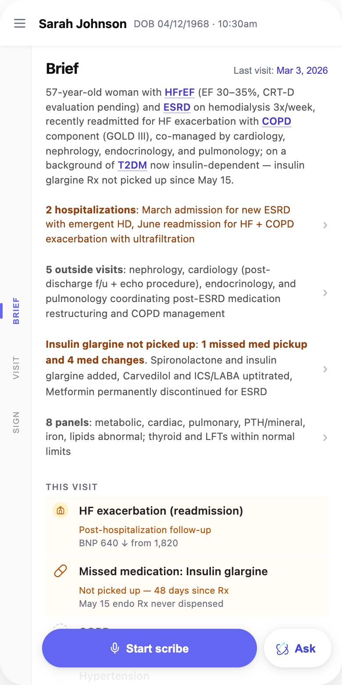
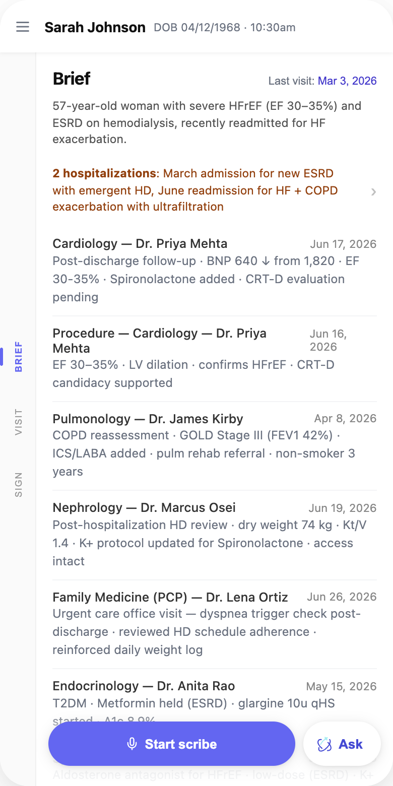
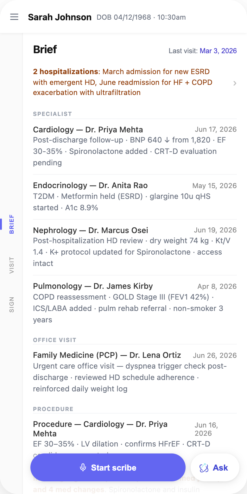
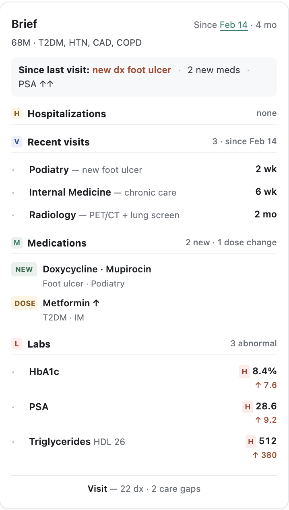
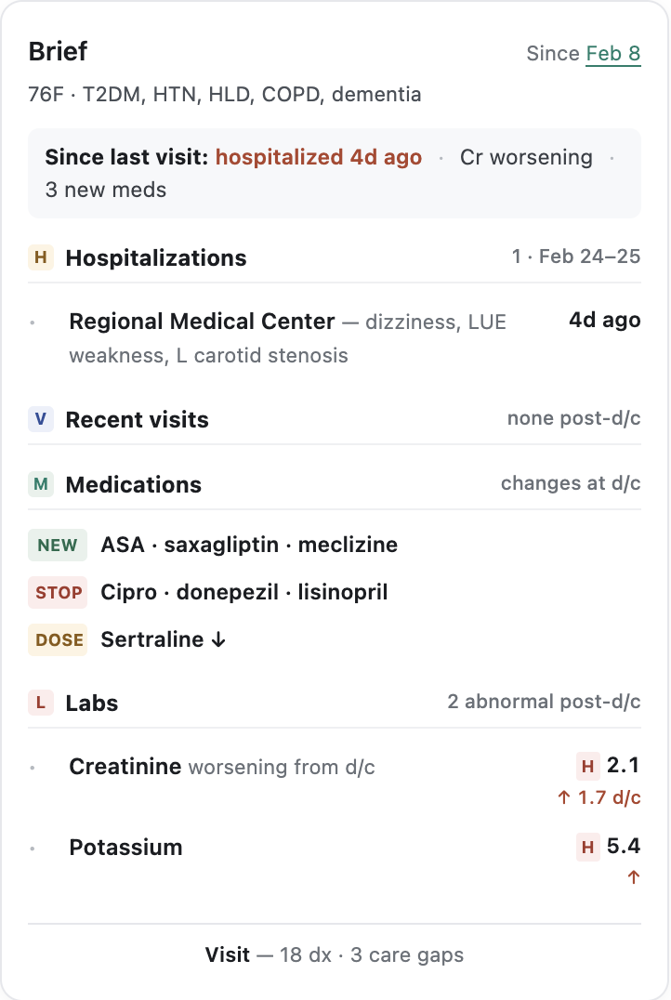
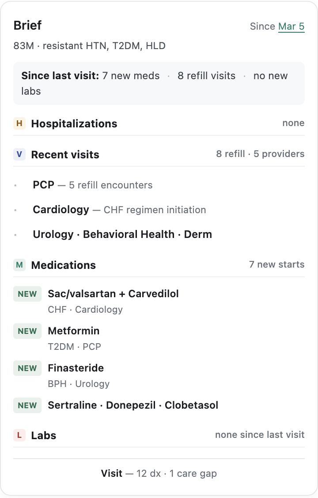
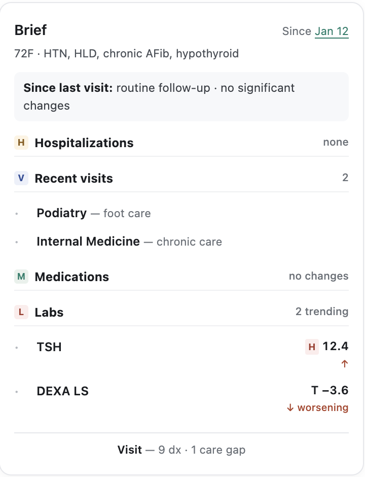
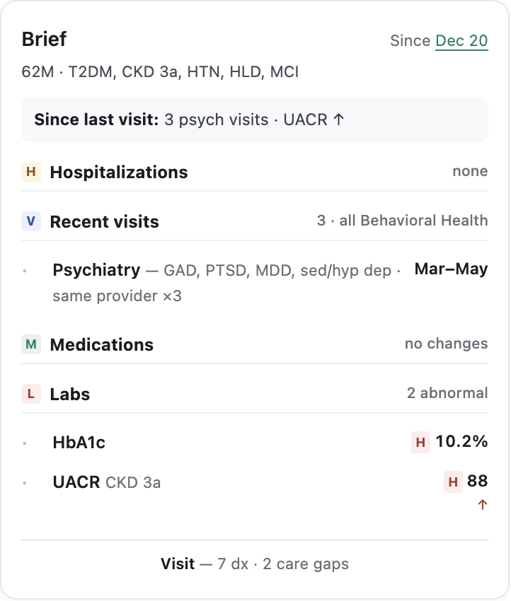
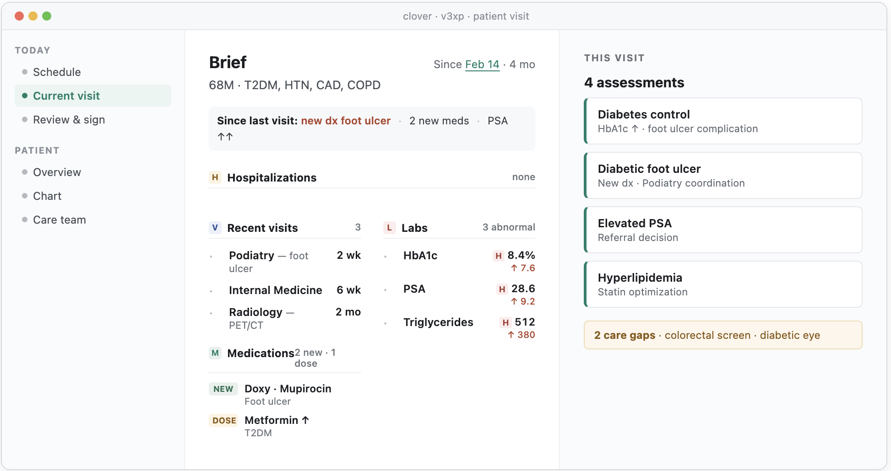

- Healthcare AI
- Information architecture
- Cross-domain research
Helping physicians gain context when time is precious
Using exploration to de-risk a decision quickly, and shipping the part that’s ready while the rest earns its evidence.
- Client
- Counterpart Health
- Delivered
- Information architecture, design research, stakeholder alignment
The brief
The pre-visit summary a physician reads in the seconds before walking into the room was working as a concept and failing as a page. Clinicians were being asked to read where they needed to scan.
The users see 40+ patients a day with no dedicated prep time between them. Each section delivered several sentences of continuous prose where a clinician needed to scan: we had structured the data and then re-flattened it into paragraphs.
Two standing decisions shaped what I could propose: surface data without editorializing, “like the most humble med student”; and one experience, three data profiles, same UX pattern, different data density.
Where the idea started
The first pass at the vision: what a physician would actually see and touch in the seconds before walking into the room, moving at the speed the visit moves.
Direction one, after the workshop
I ran a workshop with clinical stakeholders and the feedback was clear: what a physician is actually scanning for in the minute before a visit starts. This direction leads with the card — conditions, recent hospitalization, specialists, key values, care gaps — and opens each assessment as a sheet over it, with an evidence rail behind every claim.
It runs across three patient types: a multi-hospitalization case, an oncology case, and one with nothing to report but noise to filter.
And the second direction
The same clinical content, ordered differently. Putting the two side by side turned an argument about layout into a concrete choice about what a physician should hit first, which is the question the workshop had actually surfaced.
Built on real patient data
I shared both directions with stakeholders and, working with the engineering and data teams on the feedback, put this version together against representative patient data.
Testing length, and what to leave out
Three variants of the same patient, built on the same data, each testing a different answer to how much clinical context a Brief should carry and how it should be ordered. One opened with a long clinical summary, one cut it to a single line, one dropped it entirely.

A — Long clinical summary
Everything up front. A full paragraph of clinical context with each condition linked to its longitudinal history, outside visits collapsed behind a single rollup row. The richest version, and the hardest to glance at.

B — Short, severe conditions only
The intro cut to one sentence naming only the severe conditions. Nothing rolled up: every encounter is expanded and ordered high-risk first, so cardiology, pulmonology and nephrology lead.

C — No summary at all
Hospitalizations lead, with no narrative opener. Encounters are grouped by type — specialist, office visit, procedure — so the structure does the summarizing instead of the prose.
What we heard
The longer, more descriptive sections read as a wall of text — hard to glance at, hard to start reading. But once providers spent time with them, they responded positively to the quality of the content. That combination was the signal: we were getting something right, it just wasn't being parsed. And no matter how good it was, if they weren't reading it, it didn't matter.
What it did give us was a precise picture of what providers were looking for, which we used to train the model toward more consistent outcomes. Without knowing exactly what they were reading for, the model was guessing, it would include things that weren't relevant to the Brief, or simply far too much.
Using these research prototypes alongside the real data from the engineering team, I dialed in the length and quality of the content section by section. That improved the output of the Brief, and that output is what the next version, the shape work, was built on.
Work overview
I laid five real patient briefs side by side and found the system emitting the same template for all of them — for a patient with three uncontrolled conditions, one fresh out of a hospitalization, one whose only news was eight new medications from five prescribers, and one with nothing to report. That reframed the question: not what should the layout be, but how many kinds of patient does this need to handle.
Clinical software has no mature convention for this, so I went looking outside it. Briefing a busy expert on what changed since they last looked is a general problem: sales teams solved it for pre-call prep, operations teams for incident response. I analyzed thirteen products across three reference classes. The headline finding was not the one I expected; nobody in the mature class ships narrative AI summaries. Every serious product uses templated structure, type-aware sections, and traceable evidence. That retired the two-sentence “AI read of the story” I had been sketching.
I built five archetypes against real anonymized briefs — high-acuity, recent event, medication reconciliation, sparse/stable, single-domain deep — same data model, different presentational shape, with a routing rule, and took the whole exploration to product, clinical, and design leadership.
- 3
- IA improvements shipped into the alpha build
- 5
- Brief archetypes built against real anonymized patients
- 13
- Products studied across sales prep, incident response, clinical
- 3 wks
- From leadership review to the narrower proposal shipping
What the cross-domain scan told us
Thirteen products across clinical AI, observability, fintech, revenue and consumer health found the following themes.
-
Summary before detail
The best tools answer the question first and keep the evidence one click away.
-
Length follows the signal
Nothing pads a quiet period to look substantial; a quiet week reads as one line.
-
Provenance in view
Sources, windows and gaps are stated, so trust doesn't depend on the tone of the copy.
-
One shape per situation
Mature products carry a small set of fixed layouts rather than one template stretched to fit.
What the brief had to obey
Four experience principles carried through every archetype, and the structure spec fixed what each brief had to say and in what order.
No wall of text
Headers and bullets only — the brief has to stay scannable in thirty seconds.
The three-tap rule
Reading a chip, assessing in the drawer, and saving to move on takes exactly three taps.
Source transparency
Every chip and card carries a source link. The working assumption is trust but verify.
Mobile-first
The drawer takes no more than 90% of screen height, so the agenda underneath stays in view.
Section
What it carries
Byline
One sentence: age, sex, and time since the last visit — or new patient if there wasn't one.
Required assessments
The value-based care requirements that apply to today's visit date, named explicitly.
Clinical activity
Medications by status — active, recently changed by outside providers, possible gaps in filling. Labs with outside results first, then chronological, values shown with their deltas.
Preventive care
Immunizations and screenings, each with a date or an explicit no record found.
Five patient shapes, one data model
Each archetype was built against a real anonymized brief. Same sections and same underlying data — what changes is which one leads, how much room it gets, and what collapses to a single line.

01 — High acuity · Multiple uncontrolled findings
Three or more uncontrolled values or new diagnoses.

02 — Recent event · One acute event anchors the brief
A hospitalization, ED visit, or new diagnosis inside the lookback.

03 — Med reconciliation · The med list is the news
Med churn is the dominant signal.

04 — Sparse or stable · Not much to report — say so
Low signal. Be short, be honest, and do not invent hierarchy.

05 — Single-domain deep · One specialty dominates
Repeated visits in one specialty. Collapse the pattern rather than listing each visit.

Research that changes your own mind is doing its job
THE CLINICAL REVIEW
Predictability has real value at volume. A clinician reading forty Briefs a day builds muscle memory for where things live. Varying structure by patient trades that away. I tested the assumption that only showing what changed would reduce the length of the copy in the brief, what I learned was having predictable sections actually helped scannability. We used feedback on what was important to improve the model on what to display.
The Brief and the Agenda are architecturally distinct. The Brief is catch-up context with a wide net; the Agenda is focused action. Several of my shapes had started to read like action plans — useful work, but belonging to a different surface. The product lead's read was that shape-adaptive thinking might have a real home in Assessments, which opened a separate track rather than closing the idea.
Narrative synthesis was already settled. My own competitive research had found that nobody in the mature reference class ships narrative AI summaries.
The shipped brief, phone to desktop
What we learned
Where from
What it became
Filter for information that's genuinely new to the practitioner
Clinical advisors
The since-last-visit window, stated in the header and persistent across sections
Keep it tight and recent — last visit or 90 days
Clinical advisors
Every count explicitly scoped to the window; no ambiguous totals
Time-window framing is a mature convention
Sales-prep tools
Confirmed the above as an industry pattern rather than a local preference
Surface the source, not a translation of it
Clinical advisors
Findings carry the data that produced them, inline
Traceability is table stakes
Every mature product studied
Evidence threaded through sections rather than parked behind a verify action
Discharge medication lists carry duplicate-prescribing risk
Clinical advisors
Medication changes typed at list level — new, stopped, dose-changed
Surface new and unexpected labs, not every value
Clinical advisors
Labs flagged by deviation rather than listed exhaustively
Structure beats prose, without exception
Every mature product studied
A fixed section spine with scannable content beneath it
The brief must be truly brief — more complexity means less detail at the top
Leadership direction
Length matches content; progressive disclosure rather than padding

The result
As we shipped Alpha, I defined what would tell us it needed revisiting, so the team would recognize the signal, and we could iterative ship value.
- Alpha usage shows clinicians engaging with the Brief differently by patient type
- Post-alpha sessions surface the same structural ask from three or more clinicians, unprompted, after the IA improvements have landed
- A specific workflow — post-discharge follow-up being the likeliest — consistently breaks on a single-shape Brief
This let the team commit fully to the consistent-structure direction without being blocked to move forward.
To see the final version, and how this connects to the rest of the platform architecture, see A Day, Not A Dashboard.